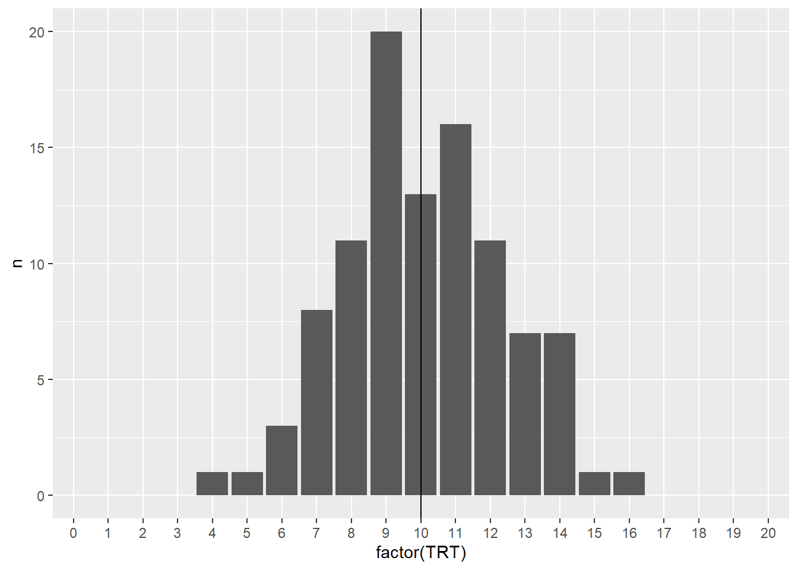

Mathematical Statistics: Simulation and Computation
A UPEI STAT 4240 Assignment
Author
Bijan (Irshaad Adatia) 高雨山
Published
February 6, 2026
Design and Analysis of Experiments and Observational Studies using R
In Chapter 2, Mathematical Statistics: Simulation and Computation, we explore the foundational tools needed to work with data in the context of experimental and observational studies.
This assignment focuses on using R to read, generate, and transform data, and to summarize and visualize key features of both discrete and continuous variables. Through computational examples and simulation, we examine how data structures, summaries, and graphical representations support statistical reasoning.
By completing this chapter, we aim to develop practical skills in data manipulation, simulation, and interpretation, and to build an intuition for how sampling behavior and variability underpin later concepts in statistical inference.
Setup Stuff
Randomization | Exercise 2.3
In Section 2.3, 20 patients for Example 2.5 were randomly selected from a population of 25,000.
Explain why the probability of choosing a random sample of 20 from 25,000 is \(\frac{1} {25000 \choose 20}\)
Use R to randomly select 4 patients from a total of 8 patients, and calculate the probability of choosing this random sample.
Probability | Exercise 2.3.a.
Explain why the probability of choosing a random sample of 20 from 25,000 is \(\frac{1} {25000 \choose 20}\)
Let’s start with smaller population size, 6, {A, B, C, D, E, F}. And, let’s start with a smaller sample size, 1. We can pick one of {A}, {B}, {C}, {D}, {E}, or {F}. That is, there are 6 ways to have a sample of size 1. The probability of choosing a random sample of size 1 from a population of size 6 is 1/6.
Let’s expand to a sample size 2. We know that once an individual is added to our sample, they can’t be picked again, and it doesn’t matter what order the individuals are added to the sample. Then, these are all the possible ways that we could pick them: {A, B} {A, C} {A, D} {A, E} {A, F}
{B, C} {B, D} {B, E} {B, F}
{C, D} {C, E} {C, F}
{D, E} {D, F}
{E, F}
That is, there are 15 ways to pick a sample of size 2. The probability of choosing a random sample of size 2 from a population of size 6 is 1/15.
We can recognize that the number of ways to pick a sample of size r from a population of size n is the binomial coefficient \(\frac{n!}{(r!(n-r)!)}\) (i.e., “n choose r”).
b. Use R to randomly select 4 patients from a total of 8 patients, and calculate the probability of choosing this random sample.
Code
# VariablespopulationSize <-8sampleSize <-4##################### Patient Populationpatients <-tibble(id =1:populationSize)# Patient SamplechosenRandomSample <- patients |>sample_n(sampleSize)# How many random samples are possible?numberOfRandomSamples <-choose(populationSize, sampleSize)# Probability of choosing this particular random sampleprobabilityOfChosenRandomSample <- (1/ numberOfRandomSamples)################### Output / Displaypatients |>mutate(inSample =if_else(id %in% chosenRandomSample$id, "TRUE", "FALSE") ) |>kbl(caption="Patient Population") |>kable_styling()
Patient Population
id
inSample
1
FALSE
2
FALSE
3
TRUE
4
FALSE
5
TRUE
6
TRUE
7
TRUE
8
FALSE
Code
probabilityOfChosenRandomSample
[1] 0.01428571
The probability of choosing this random sample is \(\frac{1}{70} \approx 0.014\).
Exercise 2.4
The treatment assignment displayed in Table 2.5 is from one treatment assignment out of \({20 \choose 10}\) possible random treatment assignments.
a. R can be used to generate all possible combinations of 10 patients assigned to the treatment group using combn(covid_sample$id, 10). Use the command to generate the combinations and confirm that there are \({20 \choose 10}\) ways to generate the treatment assignments.
Code
# Variablescovid_patientPopulationSize =25000covid_treatmentSampleSize <-20covid_activeTreatmentSampleSize <-10# the number of patients to be assigned to the active treatment (i.e., no placebo)################################## The population of Covid Patientscovid_patientPopulation <-tibble(id =1:covid_patientPopulationSize)# The sample of covid patients that we will treatcovid_treatmentSamplePatients <- covid_patientPopulation |>sample_n(covid_treatmentSampleSize)# Of the sample of patients we will treat, every possible combination of those that will receive the active treatmentallPossibleActiveTreatmentSamplePatients <- covid_treatmentSamplePatients$id |>combn(covid_activeTreatmentSampleSize) |>as_tibble()
Warning: The `x` argument of `as_tibble.matrix()` must have unique column names if
`.name_repair` is omitted as of tibble 2.0.0.
ℹ Using compatibility `.name_repair`.
Code
expectedActiveTreatmentSampleCombinationsSize <-choose(covid_treatmentSampleSize, covid_activeTreatmentSampleSize)###########################covid_treatmentSamplePatients |>kbl(caption="COVID Patients to Receive Treatment Sample") |>kable_styling()
COVID Patients to Receive Treatment Sample
id
16715
17290
20264
14181
10921
4883
16803
19022
16250
18137
1475
9472
15340
8489
13396
20749
17983
14717
15458
18309
Code
ncol(allPossibleActiveTreatmentSamplePatients)
[1] 184756
Code
expectedActiveTreatmentSampleCombinationsSize
[1] 184756
b. To generate the random array of treatment assignments in Table 2.5, R was used to randomly select 10 patients for the active treatment first and then assigned the placebo to the remaining 10. We can also generate a random treatment assignment vector by randomly selecting a column from the matrix of all possible treatment assignments created in part a. In R, randomly select a column and assign the first 10 to the active treatment and the rest to the placebo. Repeat a few times and discuss whether the procedure results in random assignments as desired. (Hint: You can use if_else(condition, true, false) inside mutate to return true when condition is met and false otherwise.)
Code
# Pick a random number between 1 and the total number of combinations to choose the patients that will get the active treatmentrandomColumnNumberFrom_allPossibleActiveTreatmentSamplePatients <-sample(1:ncol(allPossibleActiveTreatmentSamplePatients),1)# Get all the patient IDs that will get the active treatmentcovid_activeTreatmentSamplePatients <- allPossibleActiveTreatmentSamplePatients |>pull(randomColumnNumberFrom_allPossibleActiveTreatmentSamplePatients)########################################display <- covid_treatmentSamplePatients |>mutate(treatmentAssignment =if_else(id %in% covid_activeTreatmentSamplePatients, "Active", "Placebo") ) |>arrange(treatmentAssignment, id)index <-auto_index(display$treatmentAssignment)display |>kbl() |>pack_rows(index = index) |>kable_styling()
id
treatmentAssignment
Active
13396
Active
14181
Active
15340
Active
15458
Active
16250
Active
16803
Active
17983
Active
19022
Active
20264
Active
20749
Active
Placebo
1475
Placebo
4883
Placebo
8489
Placebo
9472
Placebo
10921
Placebo
14717
Placebo
16715
Placebo
17290
Placebo
18137
Placebo
18309
Placebo
Our first step uses a simple random sample of 20 patients from our population to receive treatment. Using this sample, we generate all possible combinations of choosing 10 patients. (i.e., \({20 \choose 10} = 184,756\) possible combinations) Picking a random number from 1:184756 and giving those 10 patients the active treatment is still a simple random sample. We are always guaranteed to have exactly 20 randomly selected patients from the population, and exactly 10 of those will be randomly selected to receive the active treatment. This proceudre does result in random assignments as desired.
c. Another scheme we may consider is to assign TRT or PLA to each patient with equal probabilities independently. Implement the procedure in R. Repeat a few times and discuss whether the procedure results in random assignments as desired.
Code
# "Equal Probability Assuming Independence"equalProbabilty <-sample(c("TRT","PLA"), size = covid_treatmentSampleSize, replace =TRUE)# Assign TRT or PLA to each patient independentlycovid_treatmentSamplePatients |>mutate(treatmentAssignment =sample(c("TRT","PLA"), size = covid_treatmentSampleSize, replace =TRUE) ) |>select(treatmentAssignment) |>group_by(treatmentAssignment) |>summarize(n =n()) |>kbl() |>kable_styling()
treatmentAssignment
n
PLA
9
TRT
11
Code
## TODO: run a loop and document the distribution ... good to plot it as well. df <-data.frame(id =1:100, trialTRT =NA)for (trial in1:100) { currentTrial <- covid_treatmentSamplePatients |>mutate(treatmentAssignment =sample(c("TRT","PLA"), size = covid_treatmentSampleSize, replace =TRUE) ) |>select(treatmentAssignment) |>group_by(treatmentAssignment) |>summarize(n =n()) df$trialTRT[trial] <- currentTrial$n[currentTrial$treatmentAssignment=="TRT"]}dict <-data.frame(TRT =0:20,n =0)for (i in1:100) { currentValue <- df[i,]$trialTRT dict[dict$TRT==currentValue,]$n <- dict[dict$TRT==currentValue,]$n +1}df |>group_by(TRT = trialTRT) |>select(TRT) |>summarise(n =n())
dict |>ggplot(aes(x =factor(TRT),y = n )) +geom_col() +geom_vline(xintercept =11)

TODO: We can see that while this does result in random assignments, it isn’t equally distributed.
d. Can you think of another procedure in R for randomly assigning 10 patients to active treatment? Implement your own procedure in R to verify the procedure results in random assignments.
Since the initial choosing of 20 names is already random, we could simply give the active treatment to the first 10 picked. (NOTE: This wouldn’t work if they were already ordered … would it?)
TODO: If patients are ordered by their ID, and we always choose the lowest 10 IDs, would it result in being random? duh, of course not.
Code
covid_treatmentSamplePatients |>arrange(id) |>### Obviously when this step is added, it won't be random.mutate(treatmentAssignment =if_else(row_number(id) <= covid_activeTreatmentSampleSize, "TRT", "PLA"))
# A tibble: 20 × 2
id treatmentAssignment
<int> <chr>
1 1475 TRT
2 4883 TRT
3 8489 TRT
4 9472 TRT
5 10921 TRT
6 13396 TRT
7 14181 TRT
8 14717 TRT
9 15340 TRT
10 15458 TRT
11 16250 PLA
12 16715 PLA
13 16803 PLA
14 17290 PLA
15 17983 PLA
16 18137 PLA
17 18309 PLA
18 19022 PLA
19 20264 PLA
20 20749 PLA
A chemist has seven light objects to weigh on a balance pan scale. The standard deviation of each weighing is denoted by \(\sigma\). In a 1935 paper, Frank Yates suggested an improved technique by weighing all seven objects together, and also weighing them in groups of three. The groups are chosen so that each object is weighed four times altogether, twice with any other object and twice without it.
Let \(y_1,...,y_8\) be the readings from the scale so that the equations for determining the unknown weights, \(\beta_1,...,\beta_7\), are
where the \(\epsilon_i,i=1,...,8\) are independent errors.
Hotelling suggested modifying Yates’ procedure by placing in the other pan of the scale those of the objects not included in one of his weighings. In other words if the first three objects are to be weighed, then the remaining four objects would be placed in the opposite pan.
a. Write Yates’ procedure in matrix form and find the least squares estimates of β.
Yates’ procedure can be written using the matrix form:
Let \(X\) be the design matrix, where each row \(i\) corresponds to an individual instance of weighing, and where each column \(j\) represents a “light object”.
Then each entry in the design matrix is defined as
\[
x_{ij} = \begin{cases}
1 &\text{object } j \text{ is on the scale in weighing } i \\
0 &\text{otherwise}
\end{cases}
\]
Then, it follows that a column of \(X\) is the participation pattern of one object across all weighings. For example Object 1 is in Weighing 1, 2, 3, and 4.
Which clearly results in each row \(j\) and each column \(k\) both representing an object, and the \((j,k)\) entry is the number of weighings that include both objects as defined by:
\[
(X^{T}X)_{jk} = \sum_{i=1}^{8}x_{ij}x_{ik}
\]
It is clear to see that when \(j = k\) the object has been in 4 weighings - this is true for every object. It is also clear to see that when \(j \not = k\) that the objects are in exactly 2 weighings with each other - this is also true for every pair of objects.
Therefore, our interpretations are that:
the diagonal represents how well each object is measured individually, and
the off-diagonal represents how entangled pairs of objects are
We continue with the inverse normal matrix, which helps us better understand the unvertainty of the design.
Find the variance of a weight using Yates’ and Hotelling’s procedures.
If the chemist wanted estimates of the weights with the highest precision, then which procedure (Yates or Hotelling) would you recommend that the chemist use to weigh objects? Explain your reasoning.
Exercise 2.12
Does life satisfaction change by region over time? Use the lifesat_childmort data from Example 2.15 to explore this question.